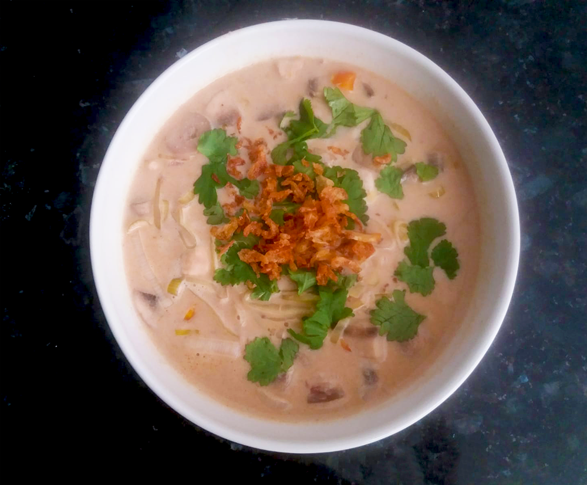

pasta pesto

ijslandse lamssoep

koreaanse bibimbap

vietnamese filodeegloempia uit de airfryer

marokkaanse tajine

coq au vin

indiase tikka masala

gnocchi
japanse beef teriyaki

vietnamese summer rolls

kokossoep

Bereidingsduur: 40 minuten
Aantal personen: 4
Ingrediënten:
400 milliliter kokosmelk
340 milliliter kippenbouillon
1 stuk wortel
1 prei
200 gram kip
1 ui
100 gram champignons
1 teentje knoflook
1 theelepel sereh
1 theelepels djahé
2 theelepels sambal
3,5 eetlepel citroensap
2 eetlepels tamarindepasta
2 eetlepels palmsuiker
gebakken uitjes
koriander
400 milliliter kokosmelk
340 milliliter kippenbouillon
1 stuk wortel
1 prei
200 gram kip
1 ui
100 gram champignons
1 teentje knoflook
1 theelepel sereh
1 theelepels djahé
2 theelepels sambal
3,5 eetlepel citroensap
2 eetlepels tamarindepasta
2 eetlepels palmsuiker
gebakken uitjes
koriander
Instructies:
1. Doe de kippenbouillon in een pan en maak warm.
2. Snijd de ui en pers de knoflook en doe deze samen met de sereh en het gemberpoeder in een vijzel en maak fijn. Doe dit bij de kippenbouillon en laat alles ongeveer 10 minuten zachtjes doorkoken zonder deksel op de pan.
3. Snijd ondertussen de champignons, prei en wortel en eventueel het kippenvlees. Voeg de groenten en de eventuele stukjes kip toe aan de soep, de kokosmelk erbij doen en alles zonder deksel op de pan ongeveer 5 minuten zachtjes laten doorkoken.
4. Voeg citroensap toe en breng de soep op smaak met zout en peper. Naar smaak tamarindepasta en palmsuiker toevoegen. Eventueel sambal toevoegen naar smaak. Garneer de soep met koriander en gebakken uitjes.
1. Doe de kippenbouillon in een pan en maak warm.
2. Snijd de ui en pers de knoflook en doe deze samen met de sereh en het gemberpoeder in een vijzel en maak fijn. Doe dit bij de kippenbouillon en laat alles ongeveer 10 minuten zachtjes doorkoken zonder deksel op de pan.
3. Snijd ondertussen de champignons, prei en wortel en eventueel het kippenvlees. Voeg de groenten en de eventuele stukjes kip toe aan de soep, de kokosmelk erbij doen en alles zonder deksel op de pan ongeveer 5 minuten zachtjes laten doorkoken.
4. Voeg citroensap toe en breng de soep op smaak met zout en peper. Naar smaak tamarindepasta en palmsuiker toevoegen. Eventueel sambal toevoegen naar smaak. Garneer de soep met koriander en gebakken uitjes.
Geen tamarindepasta in huis? Gebruik dan pruimensap of druivensap